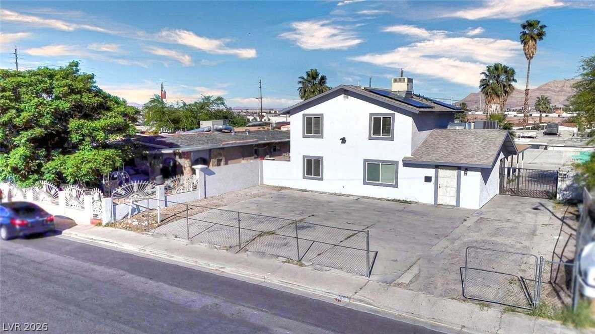
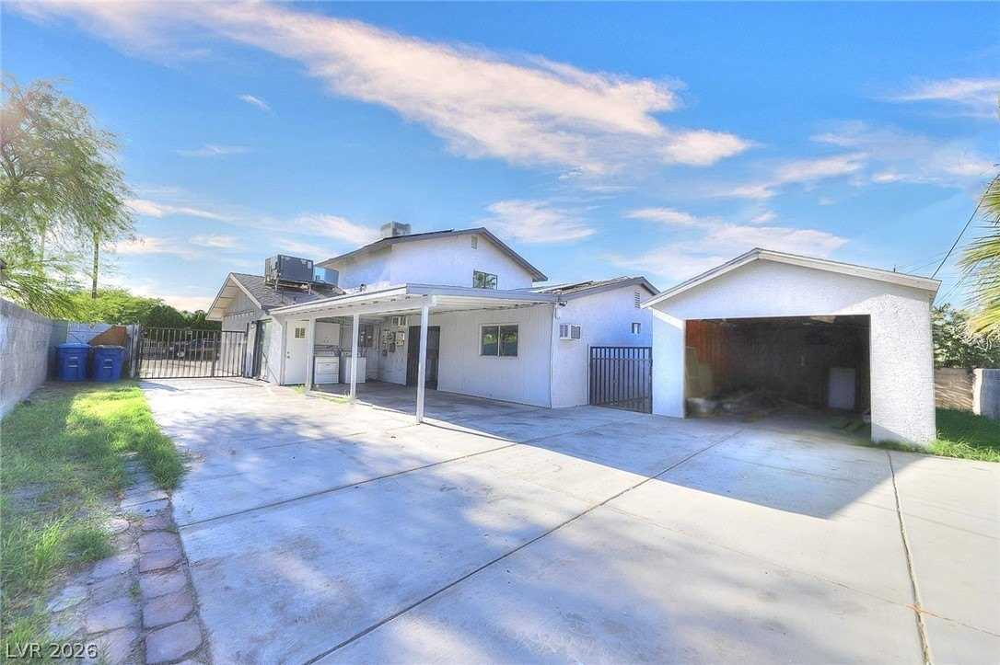
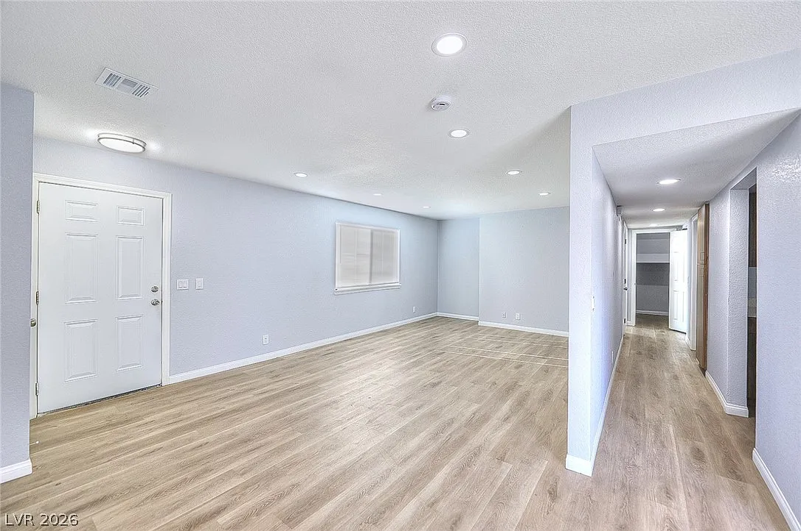
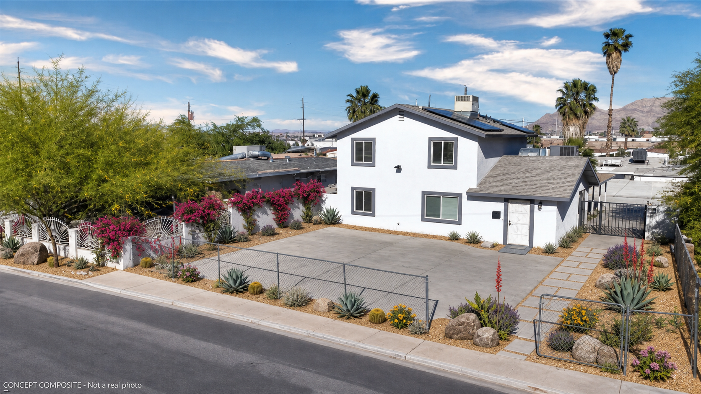
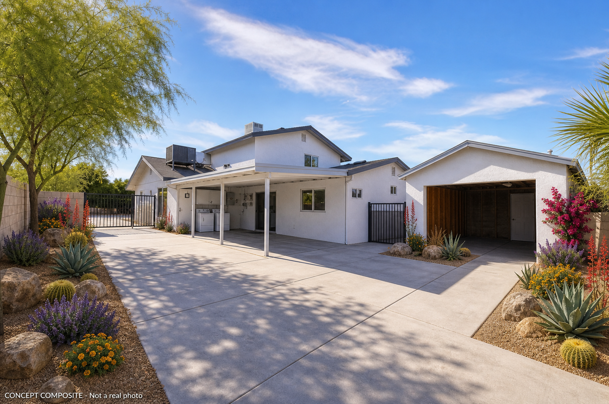
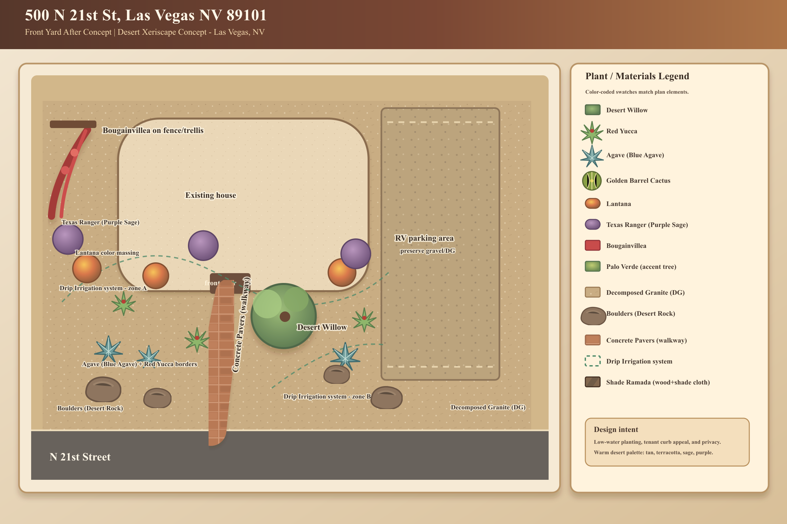
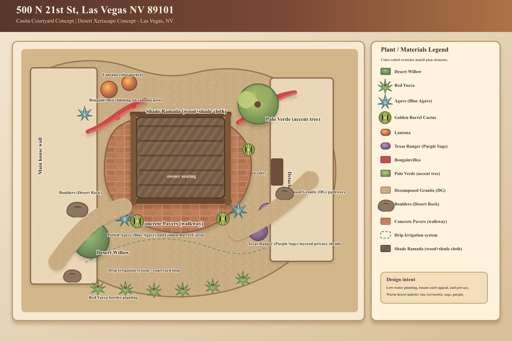

A cosmetically-renovated, move-in-ready 7-bedroom house with a separate casita in downtown Las Vegas (89101), one of the valley's most affordable, renter-dense zips, minutes from the Las Vegas Medical District / UNLV School of Medicine. The thesis: you live in the casita, rent the 6-7 main-house bedrooms by the room, and the room income covers the mortgage with margin — your housing is free and the asset still cash-flows. The math works comfortably if by-the-room rental is permitted at this parcel (the single biggest open risk — see §7).



| Attribute | Detail | Attribute | Detail |
|---|---|---|---|
| Beds / baths | 7 / 3 (all full) | Living area | 2,284 sf (2-story) |
| Lot | 6,970 sf (0.16 ac) | Year built | 1984 |
| Casita | Separate (detached; size/permit UNVERIFIED) | Garage | None — open + RV parking |
| Roof / HVAC | Comp shingle / central AC + gas + swamp cooler | Solar | Yes |
| Flooring | Luxury vinyl plank (new) | Pool / HOA | None / None |
| Taxes | ~$2,408/yr | Subdivision | Boulder Dam Homesite Add Tr #06 |
A competent cosmetic flip: fresh white stucco, new light-oak LVP throughout, gray paint, recessed can lights, 6-panel doors — clean, neutral, bright, and move-in ready, currently vacant. But it is builder/rental-grade, not high-end: plain finishes, no garage, a rooftop swamp cooler alongside the AC, chain-link front, and a bare concrete/dirt yard. Perfect canvas for a durable by-room rental; not a showpiece. Watch: the casita reads as an unfinished detached shell in the photos — confirm it's actually a permitted, finished dwelling before assuming you can live in it.
| Owner of record | Luis A. Porras Orellano & Lilian Lucia Castro Chahua (a couple — owner-occupied, not an LLC/flipper) |
|---|---|
| Mailing address | 500 N 21st St (same as property → they live there) |
| They bought | $497,000 on Jan 17, 2025 (they purchased the finished flip; prior investor bought $300K in May 2024, renovated, resold to them) |
| Listing arc | Listed 10/29/2025 at $519,777 → cut seven times → $505,000 now · ~8 months of effort, ~84 DOM this cycle |
| Monetization | Per unit | Notes (verified via room/rent portals) |
|---|---|---|
| By-room — budget (PadSplit) | $576–665/mo | weekly, utilities+wifi included |
| By-room — typical (renovated, shared bath) | $700–900/mo | Roomies/Zillow/SpareRoom downtown; furnished + utilities included is the norm |
| By-room — high (private/ensuite) | $1,000–1,200/mo | master w/ensuite |
| Whole-house (single lease) | $2,600–3,300/mo | weak path — by-room ~doubles gross (the thesis) |
Demand drivers: 89101 is the affordable, renter-heavy core; the Medical District & UNLV School of Medicine are pulling car-free students/workers who want walkable rooms. Valley vacancy ~5-7%, whole-unit rents flat (+1-2%), which strengthens the by-room arbitrage but means room rents are price-sensitive.
| Property | Bd/Ba | Sf | Price | $/sf | Date |
|---|---|---|---|---|---|
| 500 N 21st (subject) | 7/3 | 2,284 | $497,000 | $218 | renovated resale 1/2025 |
| 2200 Marlin Ave, 89101 (best comp) | 3/2.5 | 2,139 | $510,000 | $238 | 5/2025 |
| 2025 Howard Ave, 89104 | 5/3 | 1,815 | $365,000 | $201 | 2/2022 (dated) |
| 89101 median SFR (all sizes) | — | — | ~$285,000 | — | 2026 est |
At $221/sf the $505K ask is fair-to-slightly-rich — under the Marlin comp's $238 but well above the zip's small-home median. Supportable value ≈ $490–510K. There is no renovation upside left, so your margin comes from buying under ask and from the by-room income spread, not from forced appreciation.
Owner occupies the casita (no rent charged to it); income is the 6-7 main-house bedrooms. Uniform opex: vacancy 8%, taxes, landlord insurance, utilities (net of solar), maintenance, turnover/cleaning, reserves; self-managed. Financing: 10% down, 6.75%, 30-yr.
| Purchase | Scenario | Gross/yr | NOI | Cap | Mo. cash flow* |
|---|---|---|---|---|---|
| $505,000 (ask) | 6 rooms @ $775 (base) | $55,800 | $35,036 | 6.9% | +$894 |
| 7 rooms @ $800 (upside) | $67,200 | $45,524 | 9.0% | +$1,844 | |
| $488,000 (Offer B) | 6 rooms @ $700 (conservative) | $50,400 | $30,068 | 6.2% | +$543 |
| 6 rooms @ $775 (base) | $55,800 | $35,036 | 7.2% | +$993 | |
| $472,000 (Offer A) | 6 rooms @ $775 (base) | $55,800 | $35,036 | 7.4% | +$1,086 |
*Room income minus PITI + utilities, with you living free in the casita. On top of the cash flow you avoid ~$1,100/mo of rent (~$13K/yr) by occupying the casita. Full-rental sensitivity (all 7 rooms + casita rented, no owner): ~$78K gross → ~$54K NOI → ~11% cap at $488K — the asset's ceiling if you ever move out. All figures assume by-room is permitted and rents hold.
The front is a bare concrete pad behind chain-link with zero greenery. Softening it lifts curb appeal (which fills rooms faster and supports rent) while preserving the RV/tenant parking you need for a 6-tenant house. Low-water desert xeriscape, drip-irrigated, low-maintenance to keep it semi-passive:




Everything below is contingent on: by-room legality confirmation, casita permit/finish verification, inspection, clear title, and confirming the seller's loan payoff. The seller's thin equity makes a clean seller-carry unlikely — this is a price/certainty negotiation.
All-cash or strong conventional, 14-21 day close, as-is (inspection for information only), no concessions. Frame: you remove 8 months of uncertainty today. Reality: after costs this likely leaves them at a small loss, so it wins only if they're done — but it's the right opening number given DOM. Buyer return: ~7.4% house-hack cap, +$1,086/mo.
Conventional 10-20% down, 30-day close, as-is with a short inspection contingency. ~3.4% under ask — lets them recover most of their down payment while still buying you below the Marlin comp. The number most likely to actually close. Buyer return: ~7.2% cap, +$543-993/mo.
If they'll cooperate: take title subject-to their existing Jan-2025 mortgage (you make their payments) plus ~$45-55K cash to them for their equity/down recovery. Lowest cash-in for you and a clean exit for them without a payoff shortfall. Flags: the loan stays in their name (limits their next purchase — a real ask) and triggers a due-on-sale clause risk; their Jan-2025 rate (~6.5-7%) isn't a prize, so this is more about their exit than your rate. Offer only if they can't clear a conventional sale.
| Role | Who | Reach |
|---|---|---|
| Listing agent (send offer here) | Angel G. Herrera, Perla Herrera Realty | 702-816-0276 · angelherrerarealty@gmail.com · brokerage 702-832-0229 |
| Seller / owner of record | Luis A. Porras Orellano & Lilian Lucia Castro Chahua | 500 N 21st St (owner-occupied) · APN 139-35-511-005 · via listing agent |
| Listing | MLS #2771132 · $505,000 | realtyexecutives.com/…/2771132 · Redfin id 29348946 |
Prepared 2026-07-01 for Zion Property Acquisitions. Specs/price history/seller/agent are verified from Clark County Assessor + listing mirrors; rents and returns are estimates pending the legality determination; the casita finish and by-room legality are unverified and material. Nothing fabricated.